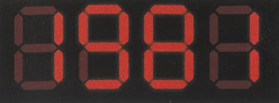
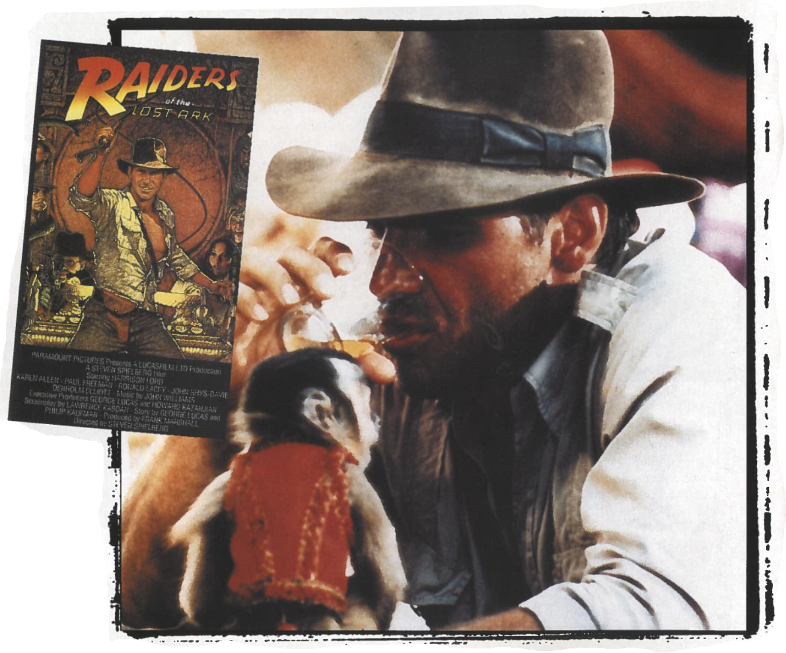

Destination: 
The coordinates are set and the TIME TUNNEL
is ready to take you back to the year of INDIANA JONES,
RONALD REGAN, and MTV
Whipping Boy!

The biggest news to hit the movie world this year is that Harrison Ford
was making waves
as the new – but strangely old-fashioned – action hero, Indiana Jones in Raiders of the Lost Ark.
After coming to prominence in Star Wars, Ford whipped moviegoers worldwide into a frenzy in a film that
brought back all the excitement and adventure of the swashbuckling films of Saturday matinees.
Marking the first collaboration between two of the world’s most successful
movie-makers, Steven
Spielberg and George Lucas, Raiders of the Lost Ark was a tribute to the cliff-hanging thrillers,
westerns and serials of the 1930s and 1940s, while at the same time making ‘Indy’ loosely based upon
19th Century archaeologist Giovanni Belzoni, a man famous for his exploration and excavation of Egyptian
burial sites.
While Lucas produced, Spielberg directed the action with his trademark panache and
helped the film reach
a box-office gross of $242 million, making it the highest earner of the year – and this was a year that
saw such notable features as a new James Bond film (for Your Eyes Only), Superman II and Terry Gilliam’s
inspired fantasy, Time Bandits.
As the eponymous Dr. Jones, he donned his Han Solo gear for a brown fedora, short
leather jacket and
bullwhip. This trademark bull-whip, a device that served as a multi-function tool and weapon and proved
invaluable as an aid to stealing ancient idols from their plinths as well as despatching the occasional
Sherpa.
The story concept went back to the days of thrilling serials and saw Indy battling
across continents in
a bid to prevent the Nazis from stealing the mythical Ark of the Covenant – a religious icon so powerful
that it could kill in the wrong hands. Mixing period drama with the supernatural allowed the FX house,
Industrial Light & Magic (ILM), to shine, and with John Williams’ rousing score throughout, the movie
proved to be a perfect piece of escapism using the styles and approach of the serials it sought to
emulate. Certainly the Academy Awards seemed to think so, as Raiders of the Lost Ark was nominated in
nine categories and won five, including Best Art Direction / Set Design, Best Sound, Best Film Editing,
Best Effects / Visual Effects and a Special Achievement Award for Sound Effects editing.
Taking this as all the proof needed that they had a hit on their hands, Lucas and
Spielberg started
making plans to continue the series: Indiana Jones and the Temple of Doom would be next…
World Events In 1981
On 20 January, Ronald Regan takes his oath as the 40th President of the United States.
Meanwhile, 52 hostages held in Tehran since 1979 are welcomed back home. Two months later, on 30 March,
President Regan is shot and wounded by a gunman. Unconfirmed reports at this time claim that the gunman,
John Hinkley, was influenced by the movie Taxi
Driver...
Pomp and ceremony
abound
in the UK as Prince Charles and Lady Diana Spencer are wed in Westminister
Abbey. The pair will stay together until they divorce in 1966.
The US spacecraft
Voyager comes within 63,000 miles of Saturn's cloud cover, relaying data and pictures back to
Earth.
The AIDS virus is first identified.
The Supreme Court of America allows television cameras into the courtroom.
The
home-computer age begins as IBM unveil its first personal computer, which uses the microsoft operating
system, MS-DOS.